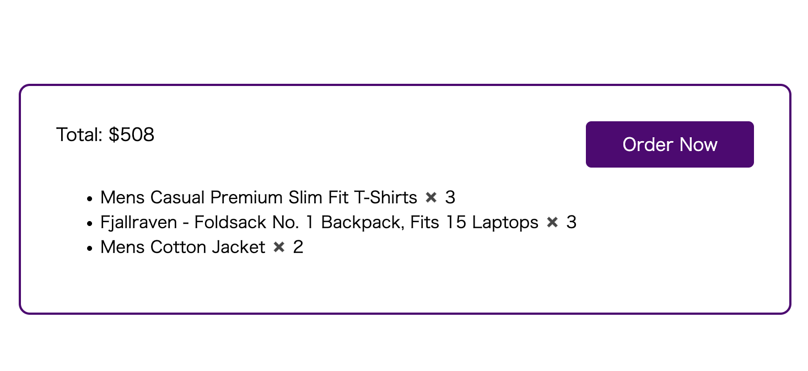
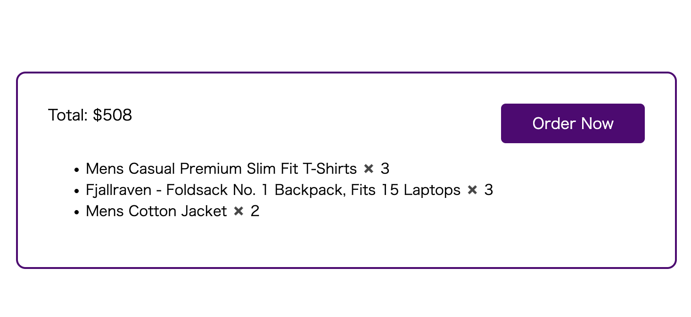
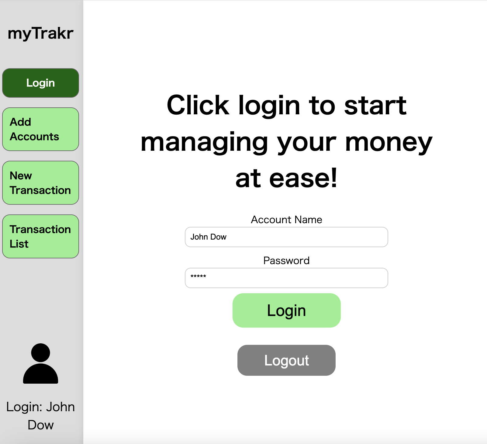
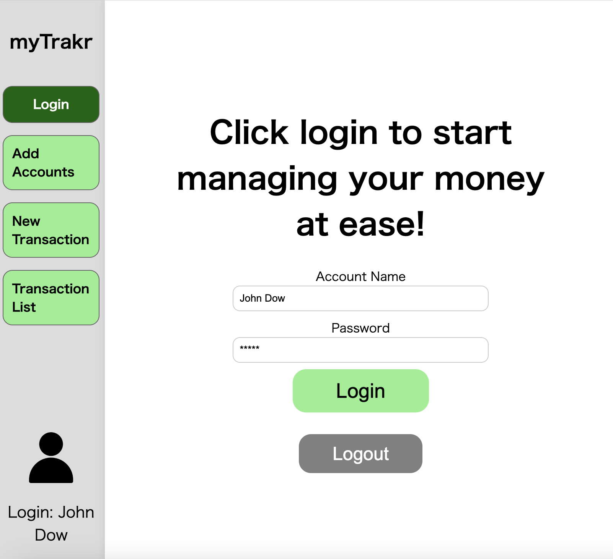

My Projects
OOP Final Project: Drag-n-Drop (2023.10)
学校の課題で作成したProject管理のモデルサイトです。
オブジェクト指向を意識して開発しました。
*Technical Specifications: HTML, CSS, JavaScript, TypeScript
Github link (oop-final-Drag-n-Drop)
OOP Assignment: ToDoList(2023.10)
学校の課題で作成したのToDoListサイトです。
オブジェクト指向を意識して開発しました。
*Technical Specifications: HTML, CSS, JavaScript, TypeScript
BananaFlaskAPP (2023.8~9)
私はよくバナナを朝食に食べるのですが、食べるタイミングによっては美味しくないと感じることがあります。
そこで、機械学習を用いて常に美味しくバナナを食べられるようにバナナの画像を元においしさを判断するwebアプリを作成することにしました。
これは、BananaDetectModelとBananaPredictModelを用いて作成したFlaskアプリです。
*Technical Specifications: Python, Flask, HTML,CSS,JavaScript,JQuery
Github link (Banana Flask Application)

BananaAI (BananaPredict.pkl) (2023.8~9)
私はよくバナナを朝食に食べるのですが、食べるタイミングによっては美味しくないと感じることがあります。
そこで、機械学習を用いて常に美味しくバナナを食べられるようにバナナの画像を元においしさを判断するwebアプリを作成することにしました。
これは、そのうちの検出されたバナナからおいしさを判定するモデルです。。
*Technical Specifications: Python, pytorch, JupiterNotebook
BananaAI (BananaDetect.pkl) (2023.8~9)
私はよくバナナを朝食に食べるのですが、食べるタイミングによっては美味しくないと感じることがあります。
そこで、機械学習を用いて常に美味しくバナナを食べられるようにバナナの画像を元においしさを判断するwebアプリを作成することにしました。
これは、そのうちの渡された画像のバナナを検出するモデルです。
*Technical Specifications: Python, pytorch, JupiterNotebook
OOP Midterm Project :Fake Shop (2023.9)
学校の課題で作成したShopping Siteのモデルサイトです。
オブジェクト指向を意識してshoppingCartやItemListなどのクラスを作成しました。
*Technical Specifications: HTML, CSS, JavaScript
Github link (0523-OOP-Midterm-Project)
 

Web2 Final Project :Fake Bank (2023.8~9)
学校の課題で作成したBanking Siteのモデルサイトです。
サーバーサイドはあらかじめ用意されており、APIリクエストを行うFrontendをメインに作成しました。
また、3人のチームでプロジェクトに取り組みました。
*Technical Specifications: HTML, CSS, JavaScript, JQuery
*Colaborator: Masahiro Kotani, Lam Kai On Bosco
Github link (0523-Web2-Final-Project)

 


Member Integration Application (2023.6)
これまで、私はchatアプリとsnackアプリを独自に作成してきました。
しかし、メンバーの新規登録をそれぞれで行うのは、ユーザーにとって煩わしいと思われます。
そこで、どちらか一方のアプリケーションでメンバー情報を登録していれば、
メールとパスワードを入力するだけで簡単にメンバー情報を統合できるAPIアプリケーションを作成しました。
*Technical Specifications: PHP, Laravel, MySQL, Postman
Github link (snack application)


Snack Application (2023.3~2023.6)
このアプリケーションは、他の国のお菓子やスイーツに関する情報を共有するためのものです。
私の出身地である日本で売られているお菓子と、ここカナダで売られているお菓子は全く違います。
どちらの国のお菓子もおいしいのですが、日本にいる間はカナダのお菓子を知ることができませんでした。
それはカナダにいる人たちとっても同じでしょう。
そこで、このアプリケーションを作りました。
このアプリケーションには、「いいね！」機能、検索機能、おすすめお菓子機能などがあります。
また、ユーザーの「いいね！」状況に応じて、自動的にユーザーの好みのお菓子を提案する仕組みも作りました。
*Technical Specifications: PHP, Laravel, JavaScript, MySQL, HTML, CSS
Github link (snack application)
application link (snack application)


Chat Application (2023.5)
ユーザー同士がコミュニケーションをとることができるアプリケーションです。
シンプルながら、投稿機能、返信機能、削除機能など基本的な機能は備えています。
*Technical Specifications: PHP, Laravel, MySQL, HTML, CSS
Github link (chat application)
application link (chat application)


Music Player (2022.12)
ハロウィン気分を盛り上げる無料音楽ダウンロードをまとめた音楽プレイヤーです。
このアプリケーションは、音楽をランダムに再生する機能を備えています。
また、音楽プレーヤーの再生中と停止中にイラストが変化します。
*Technical Specifications: JavaScript, HTML, CSS
Github link (music player)
application link (music player)